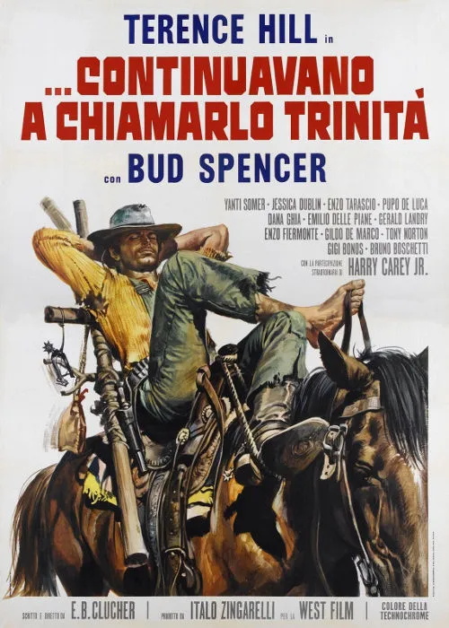

1971 · 26 tracce
Musiche di Guido e Maurizio De Angelis.
Elenco dell’edizione indicata; comprende versioni discografiche e alternative. Non costituisce un elenco certificato di ogni inserto musicale nel montaggio del film.
Gli elenchi documentano le edizioni pubblicate; la presenza di ciascuna traccia nel montaggio del film non è certificata.
Brani e ascolti
- 01
...continuavano a chiamarlo Trinità - Seq. 1
0:32Video non identificato · collegamento a una ricerca
- 02
Trinity stand tall
3:17FioRex
- 03
Trinity e Bambino a San Josè
0:47ITA MUSIC · Stesso tema · variante non confermata
- 04
Assalto alla diligenza
0:33ITA MUSIC · Stesso tema · variante non confermata
- 05
Ranch di Parker
1:14charlyelee
- 06
Trinity e Bambino a San Josè #2
2:09ITA MUSIC · Stesso tema · variante non confermata
- 07
Trinity e Bambino in città
2:11ITA MUSIC
- 08
Trinity e Bambino in città #2
2:18ΛʌʌяяʀɢɢннH · Stesso tema · variante non confermata
- 09
Trinity e Bambino al ristorante
2:02ITA MUSIC
- 10
Trinity stand tall (instr.)
0:40ITA MUSIC · Stesso tema · variante non confermata
- 11
Assalto alla diligenza #2
1:28charlyelee · Stesso tema · variante non confermata
- 12
Il carro al fiume
1:40ITA MUSIC
- 13
Remember (instr.)
1:36ITA MUSIC · Stesso tema · variante non confermata
- 14
...continuavano a chiamarlo Trinità - Seq. 2
1:16Video non identificato · collegamento a una ricerca
- 15
Bambino si confessa
3:08ITA MUSIC
- 16
Remember (instr.) #2
1:53SpencerHillDuo · Stesso tema · variante non confermata
- 17
Pace alla missione
5:27ITA MUSIC
- 18
Titoli finali
0:57SpencerHillDuo
- 19
Remember
4:1429 Smith _ 2
- 20
Trinity e Bambino a San Josè #2
1:39ITA MUSIC · Stesso tema · variante non confermata
- 21
Bar di notte
1:09ITA MUSIC · Stesso tema · variante non confermata
- 22
...continuavano a chiamarlo Trinità - Seq. 3
0:58Video non identificato · collegamento a una ricerca
- 23
Trinity e Bambino in città #3
2:16ΛʌʌяяʀɢɢннH · Stesso tema · variante non confermata
- 24
Pace alla missione #2
2:28extrasterk · Stesso tema · variante non confermata
- 25
Remember #2
5:1529 Smith _ 2 · Stesso tema · variante non confermata
- 26
Trinity e Bambino in città #4
2:17ΛʌʌяяʀɢɢннH · Stesso tema · variante non confermata
Fonti e riferimenti
- Scheda del film e creditiConsultata il 3 ottobre 2026.
- Edizione e lista delle tracceConsultata il 3 ottobre 2026.
- Locandina — ...continuavano a chiamarlo TrinitàConsultata il 3 ottobre 2026.